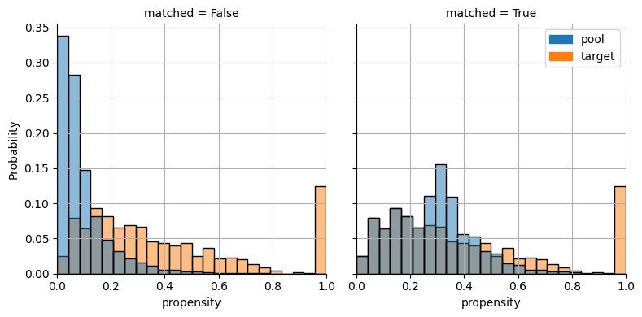

Propensity Score Matcher
In this notebook, we show the basic usage of the PropensityScoreMatcher. Unlike the GeneticMatcher and ConstraintSatisfactionMatcher, the PropensityScoreMatcher does not directly optimize a particular balance score. Instead, the PropensityScoreMatcher uses the given objective as a measure of “correctness” of the propensity score model. The matcher tries a (possibly large) number of potential models and returns the model with the best score according to the given metric.
[1]:
import logging
logging.basicConfig(
format="%(levelname)-4s [%(filename)s:%(lineno)d] %(message)s",
level='INFO',
)
from pybalance.utils import *
from pybalance.sim import generate_toy_dataset
from pybalance.propensity import PropensityScoreMatcher, plot_propensity_score_match_distributions
from pybalance.visualization import (
plot_numeric_features,
plot_categoric_features,
plot_binary_features,
plot_joint_numeric_distributions,
plot_per_feature_loss
)
[2]:
m = generate_toy_dataset(n_pool=10000, n_target=1000, seed=123)
m
[2]:
Headers Numeric:
['age', 'height', 'weight']
Headers Categoric:
['gender', 'haircolor', 'country', 'binary_0', 'binary_1', 'binary_2', 'binary_3']
Populations
['pool', 'target']
['age', 'height', 'weight']
Headers Categoric:
['gender', 'haircolor', 'country', 'binary_0', 'binary_1', 'binary_2', 'binary_3']
Populations
['pool', 'target']
| age | height | weight | gender | haircolor | country | population | binary_0 | binary_1 | binary_2 | binary_3 | patient_id | |
|---|---|---|---|---|---|---|---|---|---|---|---|---|
| 0 | 60.807949 | 173.610298 | 77.912924 | 0.0 | 1 | 4 | pool | 0 | 0 | 1 | 1 | 0 |
| 1 | 45.810836 | 170.541198 | 112.416988 | 0.0 | 1 | 4 | pool | 0 | 1 | 0 | 0 | 1 |
| 2 | 58.876976 | 188.138610 | 108.789013 | 0.0 | 0 | 2 | pool | 0 | 0 | 1 | 1 | 2 |
| 3 | 73.398077 | 162.939196 | 65.345017 | 0.0 | 1 | 4 | pool | 0 | 1 | 1 | 1 | 3 |
| 4 | 56.890587 | 156.386701 | 78.140295 | 0.0 | 0 | 3 | pool | 0 | 0 | 1 | 0 | 4 |
| ... | ... | ... | ... | ... | ... | ... | ... | ... | ... | ... | ... | ... |
| 995 | 39.662026 | 162.692755 | 54.607476 | 0.0 | 2 | 4 | target | 0 | 0 | 1 | 1 | 10995 |
| 996 | 49.130301 | 141.583192 | 103.798145 | 1.0 | 0 | 2 | target | 1 | 0 | 0 | 0 | 10996 |
| 997 | 68.035281 | 168.744482 | 56.499644 | 1.0 | 1 | 1 | target | 0 | 0 | 0 | 1 | 10997 |
| 998 | 62.044564 | 177.796983 | 75.983973 | 1.0 | 1 | 1 | target | 0 | 0 | 0 | 1 | 10998 |
| 999 | 51.243734 | 161.013556 | 86.513956 | 0.0 | 0 | 1 | target | 0 | 0 | 0 | 0 | 10999 |
11000 rows × 12 columns
Optimize Beta (Mean Absolute SMD)
[3]:
# Note that using a caliper can result in matched population being
# smaller than target! If this is undesired, do not use a caliper.
objective = beta = BetaBalance(m)
matcher = PropensityScoreMatcher(
matching_data=m,
objective=objective,
time_limit=900,
max_iter=250)
matcher.get_params()
[3]:
{'objective': 'beta',
'caliper': None,
'max_iter': 250,
'time_limit': 900,
'method': 'greedy'}
[4]:
matcher.match()
INFO [matcher.py:180] Training model LogisticRegression (iter 1/250, 0.001 min) ...
INFO [matcher.py:136] Best propensity score match found:
INFO [matcher.py:137] Model: LogisticRegression
INFO [matcher.py:139] * C: 0.30826677643062983
INFO [matcher.py:139] * fit_intercept: False
INFO [matcher.py:139] * max_iter: 500
INFO [matcher.py:139] * penalty: l2
INFO [matcher.py:139] * solver: saga
INFO [matcher.py:140] Score (beta): 0.0466
INFO [matcher.py:141] Solution time: 0.004 min
INFO [matcher.py:180] Training model LogisticRegression (iter 2/250, 0.004 min) ...
INFO [matcher.py:136] Best propensity score match found:
INFO [matcher.py:137] Model: LogisticRegression
INFO [matcher.py:139] * C: 0.4178302034480912
INFO [matcher.py:139] * fit_intercept: True
INFO [matcher.py:139] * max_iter: 500
INFO [matcher.py:139] * penalty: l2
INFO [matcher.py:139] * solver: saga
INFO [matcher.py:140] Score (beta): 0.0370
INFO [matcher.py:141] Solution time: 0.005 min
INFO [matcher.py:180] Training model SGDClassifier (iter 3/250, 0.006 min) ...
INFO [matcher.py:180] Training model SGDClassifier (iter 4/250, 0.007 min) ...
INFO [matcher.py:180] Training model SGDClassifier (iter 5/250, 0.009 min) ...
INFO [matcher.py:180] Training model SGDClassifier (iter 6/250, 0.010 min) ...
INFO [matcher.py:180] Training model SGDClassifier (iter 7/250, 0.011 min) ...
INFO [matcher.py:180] Training model LogisticRegression (iter 8/250, 0.013 min) ...
INFO [matcher.py:180] Training model LogisticRegression (iter 9/250, 0.019 min) ...
INFO [matcher.py:180] Training model SGDClassifier (iter 10/250, 0.027 min) ...
INFO [matcher.py:180] Training model LogisticRegression (iter 11/250, 0.028 min) ...
INFO [matcher.py:136] Best propensity score match found:
INFO [matcher.py:137] Model: LogisticRegression
INFO [matcher.py:139] * C: 14.096856154490844
INFO [matcher.py:139] * fit_intercept: False
INFO [matcher.py:139] * max_iter: 500
INFO [matcher.py:139] * penalty: l2
INFO [matcher.py:139] * solver: saga
INFO [matcher.py:140] Score (beta): 0.0338
INFO [matcher.py:141] Solution time: 0.041 min
INFO [matcher.py:180] Training model LogisticRegression (iter 12/250, 0.041 min) ...
INFO [matcher.py:180] Training model LogisticRegression (iter 13/250, 0.044 min) ...
INFO [matcher.py:180] Training model LogisticRegression (iter 14/250, 0.046 min) ...
/Users/sprivite/src/pybalance/venv/pybalance/lib/python3.9/site-packages/sklearn/linear_model/_sag.py:350: ConvergenceWarning: The max_iter was reached which means the coef_ did not converge
warnings.warn(
INFO [matcher.py:180] Training model SGDClassifier (iter 15/250, 0.062 min) ...
INFO [matcher.py:180] Training model SGDClassifier (iter 16/250, 0.063 min) ...
INFO [matcher.py:180] Training model LogisticRegression (iter 17/250, 0.064 min) ...
INFO [matcher.py:180] Training model SGDClassifier (iter 18/250, 0.066 min) ...
INFO [matcher.py:180] Training model LogisticRegression (iter 19/250, 0.068 min) ...
INFO [matcher.py:180] Training model LogisticRegression (iter 20/250, 0.074 min) ...
INFO [matcher.py:136] Best propensity score match found:
INFO [matcher.py:137] Model: LogisticRegression
INFO [matcher.py:139] * C: 7.104136295096468
INFO [matcher.py:139] * fit_intercept: False
INFO [matcher.py:139] * max_iter: 500
INFO [matcher.py:139] * penalty: l2
INFO [matcher.py:139] * solver: saga
INFO [matcher.py:140] Score (beta): 0.0333
INFO [matcher.py:141] Solution time: 0.084 min
INFO [matcher.py:180] Training model SGDClassifier (iter 21/250, 0.084 min) ...
INFO [matcher.py:180] Training model LogisticRegression (iter 22/250, 0.086 min) ...
INFO [matcher.py:136] Best propensity score match found:
INFO [matcher.py:137] Model: LogisticRegression
INFO [matcher.py:139] * C: 37.692577101426174
INFO [matcher.py:139] * fit_intercept: False
INFO [matcher.py:139] * max_iter: 500
INFO [matcher.py:139] * penalty: l2
INFO [matcher.py:139] * solver: saga
INFO [matcher.py:140] Score (beta): 0.0325
INFO [matcher.py:141] Solution time: 0.104 min
INFO [matcher.py:180] Training model LogisticRegression (iter 23/250, 0.104 min) ...
INFO [matcher.py:180] Training model SGDClassifier (iter 24/250, 0.110 min) ...
INFO [matcher.py:180] Training model SGDClassifier (iter 25/250, 0.111 min) ...
INFO [matcher.py:180] Training model SGDClassifier (iter 26/250, 0.113 min) ...
INFO [matcher.py:180] Training model LogisticRegression (iter 27/250, 0.114 min) ...
INFO [matcher.py:180] Training model SGDClassifier (iter 28/250, 0.123 min) ...
INFO [matcher.py:180] Training model LogisticRegression (iter 29/250, 0.124 min) ...
INFO [matcher.py:180] Training model SGDClassifier (iter 30/250, 0.126 min) ...
INFO [matcher.py:180] Training model SGDClassifier (iter 31/250, 0.127 min) ...
INFO [matcher.py:180] Training model LogisticRegression (iter 32/250, 0.129 min) ...
INFO [matcher.py:180] Training model LogisticRegression (iter 33/250, 0.130 min) ...
/Users/sprivite/src/pybalance/venv/pybalance/lib/python3.9/site-packages/sklearn/linear_model/_sag.py:350: ConvergenceWarning: The max_iter was reached which means the coef_ did not converge
warnings.warn(
INFO [matcher.py:180] Training model LogisticRegression (iter 34/250, 0.152 min) ...
INFO [matcher.py:180] Training model LogisticRegression (iter 35/250, 0.154 min) ...
INFO [matcher.py:180] Training model SGDClassifier (iter 36/250, 0.162 min) ...
INFO [matcher.py:180] Training model LogisticRegression (iter 37/250, 0.164 min) ...
INFO [matcher.py:180] Training model SGDClassifier (iter 38/250, 0.174 min) ...
INFO [matcher.py:180] Training model LogisticRegression (iter 39/250, 0.176 min) ...
INFO [matcher.py:180] Training model LogisticRegression (iter 40/250, 0.177 min) ...
INFO [matcher.py:180] Training model SGDClassifier (iter 41/250, 0.179 min) ...
INFO [matcher.py:180] Training model LogisticRegression (iter 42/250, 0.180 min) ...
/Users/sprivite/src/pybalance/venv/pybalance/lib/python3.9/site-packages/sklearn/linear_model/_sag.py:350: ConvergenceWarning: The max_iter was reached which means the coef_ did not converge
warnings.warn(
INFO [matcher.py:180] Training model SGDClassifier (iter 43/250, 0.200 min) ...
INFO [matcher.py:180] Training model SGDClassifier (iter 44/250, 0.201 min) ...
INFO [matcher.py:180] Training model LogisticRegression (iter 45/250, 0.202 min) ...
INFO [matcher.py:180] Training model SGDClassifier (iter 46/250, 0.204 min) ...
INFO [matcher.py:180] Training model LogisticRegression (iter 47/250, 0.205 min) ...
/Users/sprivite/src/pybalance/venv/pybalance/lib/python3.9/site-packages/sklearn/linear_model/_sag.py:350: ConvergenceWarning: The max_iter was reached which means the coef_ did not converge
warnings.warn(
INFO [matcher.py:180] Training model SGDClassifier (iter 48/250, 0.226 min) ...
INFO [matcher.py:180] Training model LogisticRegression (iter 49/250, 0.228 min) ...
INFO [matcher.py:180] Training model SGDClassifier (iter 50/250, 0.229 min) ...
INFO [matcher.py:180] Training model SGDClassifier (iter 51/250, 0.231 min) ...
INFO [matcher.py:180] Training model SGDClassifier (iter 52/250, 0.232 min) ...
INFO [matcher.py:180] Training model SGDClassifier (iter 53/250, 0.233 min) ...
INFO [matcher.py:180] Training model LogisticRegression (iter 54/250, 0.235 min) ...
INFO [matcher.py:180] Training model SGDClassifier (iter 55/250, 0.236 min) ...
INFO [matcher.py:180] Training model SGDClassifier (iter 56/250, 0.237 min) ...
INFO [matcher.py:180] Training model SGDClassifier (iter 57/250, 0.239 min) ...
INFO [matcher.py:180] Training model SGDClassifier (iter 58/250, 0.240 min) ...
INFO [matcher.py:180] Training model LogisticRegression (iter 59/250, 0.242 min) ...
INFO [matcher.py:180] Training model SGDClassifier (iter 60/250, 0.244 min) ...
INFO [matcher.py:180] Training model LogisticRegression (iter 61/250, 0.246 min) ...
/Users/sprivite/src/pybalance/venv/pybalance/lib/python3.9/site-packages/sklearn/linear_model/_sag.py:350: ConvergenceWarning: The max_iter was reached which means the coef_ did not converge
warnings.warn(
INFO [matcher.py:180] Training model LogisticRegression (iter 62/250, 0.269 min) ...
INFO [matcher.py:180] Training model SGDClassifier (iter 63/250, 0.271 min) ...
INFO [matcher.py:180] Training model LogisticRegression (iter 64/250, 0.272 min) ...
/Users/sprivite/src/pybalance/venv/pybalance/lib/python3.9/site-packages/sklearn/linear_model/_sag.py:350: ConvergenceWarning: The max_iter was reached which means the coef_ did not converge
warnings.warn(
INFO [matcher.py:180] Training model SGDClassifier (iter 65/250, 0.294 min) ...
INFO [matcher.py:180] Training model SGDClassifier (iter 66/250, 0.295 min) ...
INFO [matcher.py:180] Training model LogisticRegression (iter 67/250, 0.297 min) ...
INFO [matcher.py:180] Training model LogisticRegression (iter 68/250, 0.299 min) ...
/Users/sprivite/src/pybalance/venv/pybalance/lib/python3.9/site-packages/sklearn/linear_model/_sag.py:350: ConvergenceWarning: The max_iter was reached which means the coef_ did not converge
warnings.warn(
INFO [matcher.py:180] Training model LogisticRegression (iter 69/250, 0.317 min) ...
INFO [matcher.py:180] Training model SGDClassifier (iter 70/250, 0.319 min) ...
INFO [matcher.py:180] Training model LogisticRegression (iter 71/250, 0.321 min) ...
/Users/sprivite/src/pybalance/venv/pybalance/lib/python3.9/site-packages/sklearn/linear_model/_sag.py:350: ConvergenceWarning: The max_iter was reached which means the coef_ did not converge
warnings.warn(
INFO [matcher.py:180] Training model SGDClassifier (iter 72/250, 0.342 min) ...
INFO [matcher.py:180] Training model LogisticRegression (iter 73/250, 0.343 min) ...
/Users/sprivite/src/pybalance/venv/pybalance/lib/python3.9/site-packages/sklearn/linear_model/_sag.py:350: ConvergenceWarning: The max_iter was reached which means the coef_ did not converge
warnings.warn(
INFO [matcher.py:136] Best propensity score match found:
INFO [matcher.py:137] Model: LogisticRegression
INFO [matcher.py:139] * C: 1.1176816672180467
INFO [matcher.py:139] * fit_intercept: False
INFO [matcher.py:139] * max_iter: 500
INFO [matcher.py:139] * penalty: l1
INFO [matcher.py:139] * solver: saga
INFO [matcher.py:140] Score (beta): 0.0295
INFO [matcher.py:141] Solution time: 0.364 min
INFO [matcher.py:180] Training model LogisticRegression (iter 74/250, 0.364 min) ...
INFO [matcher.py:180] Training model SGDClassifier (iter 75/250, 0.367 min) ...
INFO [matcher.py:180] Training model SGDClassifier (iter 76/250, 0.368 min) ...
INFO [matcher.py:180] Training model LogisticRegression (iter 77/250, 0.370 min) ...
INFO [matcher.py:180] Training model SGDClassifier (iter 78/250, 0.373 min) ...
INFO [matcher.py:180] Training model LogisticRegression (iter 79/250, 0.374 min) ...
INFO [matcher.py:180] Training model LogisticRegression (iter 80/250, 0.375 min) ...
/Users/sprivite/src/pybalance/venv/pybalance/lib/python3.9/site-packages/sklearn/linear_model/_sag.py:350: ConvergenceWarning: The max_iter was reached which means the coef_ did not converge
warnings.warn(
INFO [matcher.py:180] Training model SGDClassifier (iter 81/250, 0.396 min) ...
INFO [matcher.py:180] Training model SGDClassifier (iter 82/250, 0.397 min) ...
INFO [matcher.py:180] Training model SGDClassifier (iter 83/250, 0.399 min) ...
INFO [matcher.py:180] Training model LogisticRegression (iter 84/250, 0.401 min) ...
/Users/sprivite/src/pybalance/venv/pybalance/lib/python3.9/site-packages/sklearn/linear_model/_sag.py:350: ConvergenceWarning: The max_iter was reached which means the coef_ did not converge
warnings.warn(
INFO [matcher.py:180] Training model LogisticRegression (iter 85/250, 0.421 min) ...
INFO [matcher.py:180] Training model SGDClassifier (iter 86/250, 0.424 min) ...
INFO [matcher.py:180] Training model SGDClassifier (iter 87/250, 0.426 min) ...
INFO [matcher.py:180] Training model LogisticRegression (iter 88/250, 0.427 min) ...
INFO [matcher.py:180] Training model SGDClassifier (iter 89/250, 0.429 min) ...
INFO [matcher.py:180] Training model LogisticRegression (iter 90/250, 0.430 min) ...
INFO [matcher.py:180] Training model SGDClassifier (iter 91/250, 0.432 min) ...
INFO [matcher.py:180] Training model SGDClassifier (iter 92/250, 0.434 min) ...
INFO [matcher.py:180] Training model LogisticRegression (iter 93/250, 0.435 min) ...
INFO [matcher.py:180] Training model LogisticRegression (iter 94/250, 0.450 min) ...
INFO [matcher.py:180] Training model LogisticRegression (iter 95/250, 0.456 min) ...
INFO [matcher.py:180] Training model LogisticRegression (iter 96/250, 0.459 min) ...
INFO [matcher.py:180] Training model LogisticRegression (iter 97/250, 0.460 min) ...
INFO [matcher.py:180] Training model LogisticRegression (iter 98/250, 0.469 min) ...
INFO [matcher.py:180] Training model SGDClassifier (iter 99/250, 0.474 min) ...
INFO [matcher.py:180] Training model LogisticRegression (iter 100/250, 0.475 min) ...
/Users/sprivite/src/pybalance/venv/pybalance/lib/python3.9/site-packages/sklearn/linear_model/_sag.py:350: ConvergenceWarning: The max_iter was reached which means the coef_ did not converge
warnings.warn(
INFO [matcher.py:180] Training model LogisticRegression (iter 101/250, 0.498 min) ...
INFO [matcher.py:180] Training model SGDClassifier (iter 102/250, 0.510 min) ...
INFO [matcher.py:180] Training model LogisticRegression (iter 103/250, 0.512 min) ...
INFO [matcher.py:180] Training model LogisticRegression (iter 104/250, 0.514 min) ...
INFO [matcher.py:180] Training model LogisticRegression (iter 105/250, 0.516 min) ...
INFO [matcher.py:180] Training model LogisticRegression (iter 106/250, 0.533 min) ...
/Users/sprivite/src/pybalance/venv/pybalance/lib/python3.9/site-packages/sklearn/linear_model/_sag.py:350: ConvergenceWarning: The max_iter was reached which means the coef_ did not converge
warnings.warn(
INFO [matcher.py:180] Training model LogisticRegression (iter 107/250, 0.555 min) ...
INFO [matcher.py:180] Training model LogisticRegression (iter 108/250, 0.575 min) ...
INFO [matcher.py:180] Training model LogisticRegression (iter 109/250, 0.582 min) ...
INFO [matcher.py:180] Training model SGDClassifier (iter 110/250, 0.583 min) ...
INFO [matcher.py:180] Training model SGDClassifier (iter 111/250, 0.585 min) ...
INFO [matcher.py:180] Training model LogisticRegression (iter 112/250, 0.586 min) ...
INFO [matcher.py:180] Training model LogisticRegression (iter 113/250, 0.588 min) ...
INFO [matcher.py:180] Training model SGDClassifier (iter 114/250, 0.606 min) ...
INFO [matcher.py:180] Training model LogisticRegression (iter 115/250, 0.608 min) ...
INFO [matcher.py:180] Training model SGDClassifier (iter 116/250, 0.610 min) ...
INFO [matcher.py:180] Training model LogisticRegression (iter 117/250, 0.612 min) ...
INFO [matcher.py:180] Training model LogisticRegression (iter 118/250, 0.614 min) ...
/Users/sprivite/src/pybalance/venv/pybalance/lib/python3.9/site-packages/sklearn/linear_model/_sag.py:350: ConvergenceWarning: The max_iter was reached which means the coef_ did not converge
warnings.warn(
INFO [matcher.py:180] Training model SGDClassifier (iter 119/250, 0.636 min) ...
INFO [matcher.py:180] Training model LogisticRegression (iter 120/250, 0.637 min) ...
/Users/sprivite/src/pybalance/venv/pybalance/lib/python3.9/site-packages/sklearn/linear_model/_sag.py:350: ConvergenceWarning: The max_iter was reached which means the coef_ did not converge
warnings.warn(
INFO [matcher.py:180] Training model SGDClassifier (iter 121/250, 0.659 min) ...
INFO [matcher.py:180] Training model LogisticRegression (iter 122/250, 0.661 min) ...
/Users/sprivite/src/pybalance/venv/pybalance/lib/python3.9/site-packages/sklearn/linear_model/_sag.py:350: ConvergenceWarning: The max_iter was reached which means the coef_ did not converge
warnings.warn(
INFO [matcher.py:180] Training model LogisticRegression (iter 123/250, 0.683 min) ...
INFO [matcher.py:180] Training model SGDClassifier (iter 124/250, 0.685 min) ...
INFO [matcher.py:180] Training model LogisticRegression (iter 125/250, 0.686 min) ...
/Users/sprivite/src/pybalance/venv/pybalance/lib/python3.9/site-packages/sklearn/linear_model/_sag.py:350: ConvergenceWarning: The max_iter was reached which means the coef_ did not converge
warnings.warn(
INFO [matcher.py:180] Training model LogisticRegression (iter 126/250, 0.707 min) ...
INFO [matcher.py:180] Training model SGDClassifier (iter 127/250, 0.708 min) ...
INFO [matcher.py:180] Training model LogisticRegression (iter 128/250, 0.710 min) ...
INFO [matcher.py:180] Training model LogisticRegression (iter 129/250, 0.717 min) ...
INFO [matcher.py:180] Training model SGDClassifier (iter 130/250, 0.719 min) ...
INFO [matcher.py:180] Training model SGDClassifier (iter 131/250, 0.721 min) ...
INFO [matcher.py:180] Training model LogisticRegression (iter 132/250, 0.725 min) ...
INFO [matcher.py:180] Training model SGDClassifier (iter 133/250, 0.727 min) ...
INFO [matcher.py:180] Training model SGDClassifier (iter 134/250, 0.728 min) ...
INFO [matcher.py:180] Training model SGDClassifier (iter 135/250, 0.730 min) ...
INFO [matcher.py:180] Training model SGDClassifier (iter 136/250, 0.731 min) ...
INFO [matcher.py:180] Training model LogisticRegression (iter 137/250, 0.733 min) ...
/Users/sprivite/src/pybalance/venv/pybalance/lib/python3.9/site-packages/sklearn/linear_model/_sag.py:350: ConvergenceWarning: The max_iter was reached which means the coef_ did not converge
warnings.warn(
INFO [matcher.py:180] Training model LogisticRegression (iter 138/250, 0.754 min) ...
/Users/sprivite/src/pybalance/venv/pybalance/lib/python3.9/site-packages/sklearn/linear_model/_sag.py:350: ConvergenceWarning: The max_iter was reached which means the coef_ did not converge
warnings.warn(
INFO [matcher.py:180] Training model SGDClassifier (iter 139/250, 0.775 min) ...
INFO [matcher.py:180] Training model LogisticRegression (iter 140/250, 0.777 min) ...
INFO [matcher.py:180] Training model LogisticRegression (iter 141/250, 0.779 min) ...
INFO [matcher.py:180] Training model SGDClassifier (iter 142/250, 0.781 min) ...
INFO [matcher.py:180] Training model LogisticRegression (iter 143/250, 0.782 min) ...
/Users/sprivite/src/pybalance/venv/pybalance/lib/python3.9/site-packages/sklearn/linear_model/_sag.py:350: ConvergenceWarning: The max_iter was reached which means the coef_ did not converge
warnings.warn(
INFO [matcher.py:180] Training model SGDClassifier (iter 144/250, 0.806 min) ...
INFO [matcher.py:180] Training model LogisticRegression (iter 145/250, 0.807 min) ...
INFO [matcher.py:180] Training model SGDClassifier (iter 146/250, 0.814 min) ...
INFO [matcher.py:180] Training model SGDClassifier (iter 147/250, 0.816 min) ...
INFO [matcher.py:180] Training model SGDClassifier (iter 148/250, 0.817 min) ...
INFO [matcher.py:180] Training model SGDClassifier (iter 149/250, 0.819 min) ...
INFO [matcher.py:180] Training model LogisticRegression (iter 150/250, 0.820 min) ...
INFO [matcher.py:180] Training model SGDClassifier (iter 151/250, 0.826 min) ...
INFO [matcher.py:180] Training model SGDClassifier (iter 152/250, 0.827 min) ...
INFO [matcher.py:180] Training model SGDClassifier (iter 153/250, 0.828 min) ...
INFO [matcher.py:180] Training model SGDClassifier (iter 154/250, 0.830 min) ...
INFO [matcher.py:180] Training model SGDClassifier (iter 155/250, 0.831 min) ...
INFO [matcher.py:180] Training model LogisticRegression (iter 156/250, 0.832 min) ...
INFO [matcher.py:180] Training model LogisticRegression (iter 157/250, 0.834 min) ...
INFO [matcher.py:180] Training model LogisticRegression (iter 158/250, 0.847 min) ...
/Users/sprivite/src/pybalance/venv/pybalance/lib/python3.9/site-packages/sklearn/linear_model/_sag.py:350: ConvergenceWarning: The max_iter was reached which means the coef_ did not converge
warnings.warn(
INFO [matcher.py:180] Training model SGDClassifier (iter 159/250, 0.869 min) ...
INFO [matcher.py:180] Training model LogisticRegression (iter 160/250, 0.871 min) ...
INFO [matcher.py:180] Training model SGDClassifier (iter 161/250, 0.873 min) ...
INFO [matcher.py:180] Training model SGDClassifier (iter 162/250, 0.874 min) ...
INFO [matcher.py:180] Training model SGDClassifier (iter 163/250, 0.875 min) ...
INFO [matcher.py:180] Training model LogisticRegression (iter 164/250, 0.877 min) ...
/Users/sprivite/src/pybalance/venv/pybalance/lib/python3.9/site-packages/sklearn/linear_model/_sag.py:350: ConvergenceWarning: The max_iter was reached which means the coef_ did not converge
warnings.warn(
INFO [matcher.py:180] Training model SGDClassifier (iter 165/250, 0.898 min) ...
INFO [matcher.py:180] Training model SGDClassifier (iter 166/250, 0.900 min) ...
INFO [matcher.py:180] Training model LogisticRegression (iter 167/250, 0.901 min) ...
/Users/sprivite/src/pybalance/venv/pybalance/lib/python3.9/site-packages/sklearn/linear_model/_sag.py:350: ConvergenceWarning: The max_iter was reached which means the coef_ did not converge
warnings.warn(
INFO [matcher.py:180] Training model LogisticRegression (iter 168/250, 0.923 min) ...
INFO [matcher.py:180] Training model LogisticRegression (iter 169/250, 0.925 min) ...
INFO [matcher.py:180] Training model LogisticRegression (iter 170/250, 0.927 min) ...
/Users/sprivite/src/pybalance/venv/pybalance/lib/python3.9/site-packages/sklearn/linear_model/_sag.py:350: ConvergenceWarning: The max_iter was reached which means the coef_ did not converge
warnings.warn(
INFO [matcher.py:180] Training model SGDClassifier (iter 171/250, 0.950 min) ...
INFO [matcher.py:180] Training model LogisticRegression (iter 172/250, 0.952 min) ...
INFO [matcher.py:180] Training model SGDClassifier (iter 173/250, 0.966 min) ...
INFO [matcher.py:180] Training model SGDClassifier (iter 174/250, 0.968 min) ...
INFO [matcher.py:180] Training model SGDClassifier (iter 175/250, 0.969 min) ...
INFO [matcher.py:180] Training model SGDClassifier (iter 176/250, 0.970 min) ...
INFO [matcher.py:180] Training model SGDClassifier (iter 177/250, 0.972 min) ...
INFO [matcher.py:180] Training model LogisticRegression (iter 178/250, 0.973 min) ...
INFO [matcher.py:180] Training model LogisticRegression (iter 179/250, 0.974 min) ...
INFO [matcher.py:180] Training model SGDClassifier (iter 180/250, 0.977 min) ...
INFO [matcher.py:180] Training model LogisticRegression (iter 181/250, 0.978 min) ...
INFO [matcher.py:180] Training model LogisticRegression (iter 182/250, 1.001 min) ...
INFO [matcher.py:180] Training model LogisticRegression (iter 183/250, 1.004 min) ...
INFO [matcher.py:180] Training model SGDClassifier (iter 184/250, 1.008 min) ...
INFO [matcher.py:180] Training model LogisticRegression (iter 185/250, 1.009 min) ...
INFO [matcher.py:180] Training model LogisticRegression (iter 186/250, 1.011 min) ...
/Users/sprivite/src/pybalance/venv/pybalance/lib/python3.9/site-packages/sklearn/linear_model/_sag.py:350: ConvergenceWarning: The max_iter was reached which means the coef_ did not converge
warnings.warn(
INFO [matcher.py:180] Training model LogisticRegression (iter 187/250, 1.033 min) ...
INFO [matcher.py:180] Training model SGDClassifier (iter 188/250, 1.035 min) ...
INFO [matcher.py:180] Training model SGDClassifier (iter 189/250, 1.037 min) ...
INFO [matcher.py:180] Training model LogisticRegression (iter 190/250, 1.038 min) ...
INFO [matcher.py:180] Training model SGDClassifier (iter 191/250, 1.055 min) ...
INFO [matcher.py:180] Training model LogisticRegression (iter 192/250, 1.057 min) ...
INFO [matcher.py:180] Training model SGDClassifier (iter 193/250, 1.063 min) ...
INFO [matcher.py:180] Training model LogisticRegression (iter 194/250, 1.064 min) ...
INFO [matcher.py:180] Training model SGDClassifier (iter 195/250, 1.066 min) ...
INFO [matcher.py:180] Training model LogisticRegression (iter 196/250, 1.068 min) ...
INFO [matcher.py:180] Training model SGDClassifier (iter 197/250, 1.070 min) ...
INFO [matcher.py:180] Training model LogisticRegression (iter 198/250, 1.071 min) ...
INFO [matcher.py:180] Training model SGDClassifier (iter 199/250, 1.074 min) ...
INFO [matcher.py:180] Training model LogisticRegression (iter 200/250, 1.076 min) ...
INFO [matcher.py:180] Training model SGDClassifier (iter 201/250, 1.078 min) ...
INFO [matcher.py:180] Training model LogisticRegression (iter 202/250, 1.079 min) ...
/Users/sprivite/src/pybalance/venv/pybalance/lib/python3.9/site-packages/sklearn/linear_model/_sag.py:350: ConvergenceWarning: The max_iter was reached which means the coef_ did not converge
warnings.warn(
INFO [matcher.py:180] Training model SGDClassifier (iter 203/250, 1.102 min) ...
INFO [matcher.py:180] Training model SGDClassifier (iter 204/250, 1.104 min) ...
INFO [matcher.py:180] Training model LogisticRegression (iter 205/250, 1.105 min) ...
INFO [matcher.py:180] Training model SGDClassifier (iter 206/250, 1.117 min) ...
INFO [matcher.py:180] Training model LogisticRegression (iter 207/250, 1.119 min) ...
INFO [matcher.py:180] Training model SGDClassifier (iter 208/250, 1.121 min) ...
INFO [matcher.py:180] Training model LogisticRegression (iter 209/250, 1.122 min) ...
/Users/sprivite/src/pybalance/venv/pybalance/lib/python3.9/site-packages/sklearn/linear_model/_sag.py:350: ConvergenceWarning: The max_iter was reached which means the coef_ did not converge
warnings.warn(
INFO [matcher.py:180] Training model LogisticRegression (iter 210/250, 1.145 min) ...
INFO [matcher.py:180] Training model LogisticRegression (iter 211/250, 1.147 min) ...
INFO [matcher.py:180] Training model LogisticRegression (iter 212/250, 1.150 min) ...
/Users/sprivite/src/pybalance/venv/pybalance/lib/python3.9/site-packages/sklearn/linear_model/_sag.py:350: ConvergenceWarning: The max_iter was reached which means the coef_ did not converge
warnings.warn(
INFO [matcher.py:180] Training model SGDClassifier (iter 213/250, 1.172 min) ...
INFO [matcher.py:180] Training model SGDClassifier (iter 214/250, 1.174 min) ...
INFO [matcher.py:180] Training model SGDClassifier (iter 215/250, 1.175 min) ...
INFO [matcher.py:180] Training model LogisticRegression (iter 216/250, 1.176 min) ...
/Users/sprivite/src/pybalance/venv/pybalance/lib/python3.9/site-packages/sklearn/linear_model/_sag.py:350: ConvergenceWarning: The max_iter was reached which means the coef_ did not converge
warnings.warn(
INFO [matcher.py:180] Training model SGDClassifier (iter 217/250, 1.195 min) ...
INFO [matcher.py:180] Training model LogisticRegression (iter 218/250, 1.196 min) ...
INFO [matcher.py:180] Training model LogisticRegression (iter 219/250, 1.198 min) ...
INFO [matcher.py:180] Training model LogisticRegression (iter 220/250, 1.200 min) ...
INFO [matcher.py:180] Training model SGDClassifier (iter 221/250, 1.204 min) ...
INFO [matcher.py:180] Training model SGDClassifier (iter 222/250, 1.205 min) ...
INFO [matcher.py:180] Training model SGDClassifier (iter 223/250, 1.206 min) ...
INFO [matcher.py:180] Training model SGDClassifier (iter 224/250, 1.207 min) ...
INFO [matcher.py:180] Training model SGDClassifier (iter 225/250, 1.209 min) ...
INFO [matcher.py:180] Training model LogisticRegression (iter 226/250, 1.210 min) ...
INFO [matcher.py:180] Training model SGDClassifier (iter 227/250, 1.212 min) ...
INFO [matcher.py:180] Training model LogisticRegression (iter 228/250, 1.214 min) ...
INFO [matcher.py:180] Training model LogisticRegression (iter 229/250, 1.215 min) ...
INFO [matcher.py:180] Training model LogisticRegression (iter 230/250, 1.230 min) ...
INFO [matcher.py:180] Training model SGDClassifier (iter 231/250, 1.239 min) ...
INFO [matcher.py:180] Training model LogisticRegression (iter 232/250, 1.240 min) ...
INFO [matcher.py:180] Training model SGDClassifier (iter 233/250, 1.261 min) ...
INFO [matcher.py:180] Training model SGDClassifier (iter 234/250, 1.263 min) ...
INFO [matcher.py:180] Training model SGDClassifier (iter 235/250, 1.265 min) ...
INFO [matcher.py:180] Training model SGDClassifier (iter 236/250, 1.267 min) ...
INFO [matcher.py:180] Training model SGDClassifier (iter 237/250, 1.268 min) ...
INFO [matcher.py:180] Training model LogisticRegression (iter 238/250, 1.269 min) ...
/Users/sprivite/src/pybalance/venv/pybalance/lib/python3.9/site-packages/sklearn/linear_model/_sag.py:350: ConvergenceWarning: The max_iter was reached which means the coef_ did not converge
warnings.warn(
INFO [matcher.py:180] Training model LogisticRegression (iter 239/250, 1.292 min) ...
INFO [matcher.py:180] Training model SGDClassifier (iter 240/250, 1.294 min) ...
INFO [matcher.py:180] Training model SGDClassifier (iter 241/250, 1.296 min) ...
INFO [matcher.py:180] Training model SGDClassifier (iter 242/250, 1.298 min) ...
INFO [matcher.py:180] Training model SGDClassifier (iter 243/250, 1.299 min) ...
INFO [matcher.py:180] Training model LogisticRegression (iter 244/250, 1.301 min) ...
INFO [matcher.py:180] Training model SGDClassifier (iter 245/250, 1.306 min) ...
INFO [matcher.py:180] Training model LogisticRegression (iter 246/250, 1.308 min) ...
/Users/sprivite/src/pybalance/venv/pybalance/lib/python3.9/site-packages/sklearn/linear_model/_sag.py:350: ConvergenceWarning: The max_iter was reached which means the coef_ did not converge
warnings.warn(
INFO [matcher.py:180] Training model SGDClassifier (iter 247/250, 1.331 min) ...
INFO [matcher.py:180] Training model SGDClassifier (iter 248/250, 1.332 min) ...
INFO [matcher.py:180] Training model LogisticRegression (iter 249/250, 1.334 min) ...
INFO [matcher.py:180] Training model LogisticRegression (iter 250/250, 1.341 min) ...
INFO [matcher.py:136] Best propensity score match found:
INFO [matcher.py:137] Model: LogisticRegression
INFO [matcher.py:139] * C: 1.1176816672180467
INFO [matcher.py:139] * fit_intercept: False
INFO [matcher.py:139] * max_iter: 500
INFO [matcher.py:139] * penalty: l1
INFO [matcher.py:139] * solver: saga
INFO [matcher.py:140] Score (beta): 0.0295
INFO [matcher.py:141] Solution time: 0.364 min
[4]:
Headers Numeric:
['age', 'height', 'weight']
Headers Categoric:
['gender', 'haircolor', 'country', 'binary_0', 'binary_1', 'binary_2', 'binary_3']
Populations
['pool', 'target']
['age', 'height', 'weight']
Headers Categoric:
['gender', 'haircolor', 'country', 'binary_0', 'binary_1', 'binary_2', 'binary_3']
Populations
['pool', 'target']
| age | height | weight | gender | haircolor | country | population | binary_0 | binary_1 | binary_2 | binary_3 | patient_id | |
|---|---|---|---|---|---|---|---|---|---|---|---|---|
| 3446 | 37.549356 | 139.579121 | 60.890246 | 1.0 | 1 | 1 | pool | 0 | 0 | 0 | 1 | 3446 |
| 4926 | 27.557032 | 151.371970 | 77.182597 | 1.0 | 1 | 3 | pool | 0 | 1 | 0 | 0 | 4926 |
| 3456 | 60.742592 | 179.351062 | 73.254390 | 0.0 | 0 | 1 | pool | 1 | 0 | 1 | 1 | 3456 |
| 6891 | 53.909882 | 185.862281 | 54.818220 | 0.0 | 2 | 3 | pool | 1 | 0 | 1 | 0 | 6891 |
| 962 | 52.829914 | 137.725077 | 93.206007 | 0.0 | 1 | 2 | pool | 1 | 1 | 0 | 0 | 962 |
| ... | ... | ... | ... | ... | ... | ... | ... | ... | ... | ... | ... | ... |
| 995 | 39.662026 | 162.692755 | 54.607476 | 0.0 | 2 | 4 | target | 0 | 0 | 1 | 1 | 10995 |
| 996 | 49.130301 | 141.583192 | 103.798145 | 1.0 | 0 | 2 | target | 1 | 0 | 0 | 0 | 10996 |
| 997 | 68.035281 | 168.744482 | 56.499644 | 1.0 | 1 | 1 | target | 0 | 0 | 0 | 1 | 10997 |
| 998 | 62.044564 | 177.796983 | 75.983973 | 1.0 | 1 | 1 | target | 0 | 0 | 0 | 1 | 10998 |
| 999 | 51.243734 | 161.013556 | 86.513956 | 0.0 | 0 | 1 | target | 0 | 0 | 0 | 0 | 10999 |
2000 rows × 12 columns
[5]:
%matplotlib inline
plot_propensity_score_match_distributions(matcher)
[5]:
<seaborn.axisgrid.FacetGrid at 0x7f8e68524a90>

[6]:
%matplotlib inline
objective = beta = BetaBalance(m)
match = matcher.get_best_match()
m_data = m.copy().get_population('pool')
m_data.loc[:, 'population'] = m_data['population'] + ' (prematch)'
match.append(m_data)
fig = plot_per_feature_loss(match, beta, 'target', debin=False)
fig = plot_numeric_features(match, hue_order=['pool (prematch)', 'pool', 'target', ])
fig = plot_categoric_features(match, hue_order=['pool (prematch)', 'pool', 'target'])
INFO [matcher.py:136] Best propensity score match found:
INFO [matcher.py:137] Model: LogisticRegression
INFO [matcher.py:139] * C: 1.1176816672180467
INFO [matcher.py:139] * fit_intercept: False
INFO [matcher.py:139] * max_iter: 500
INFO [matcher.py:139] * penalty: l1
INFO [matcher.py:139] * solver: saga
INFO [matcher.py:140] Score (beta): 0.0295
INFO [matcher.py:141] Solution time: 0.364 min
